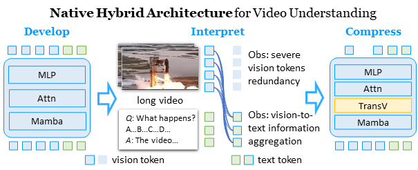
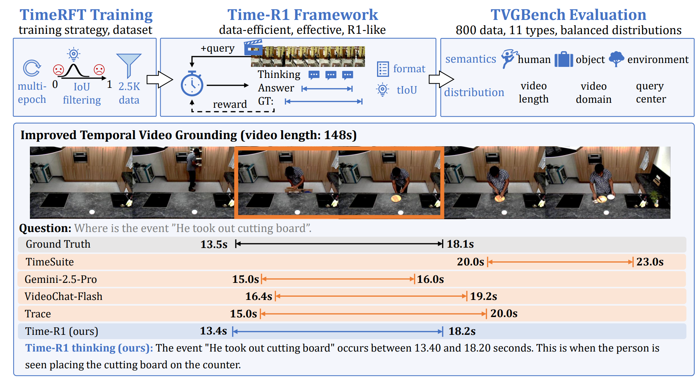
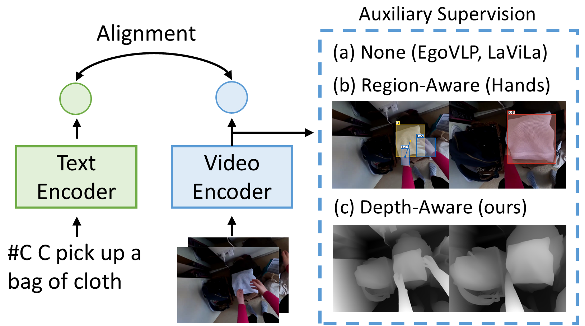
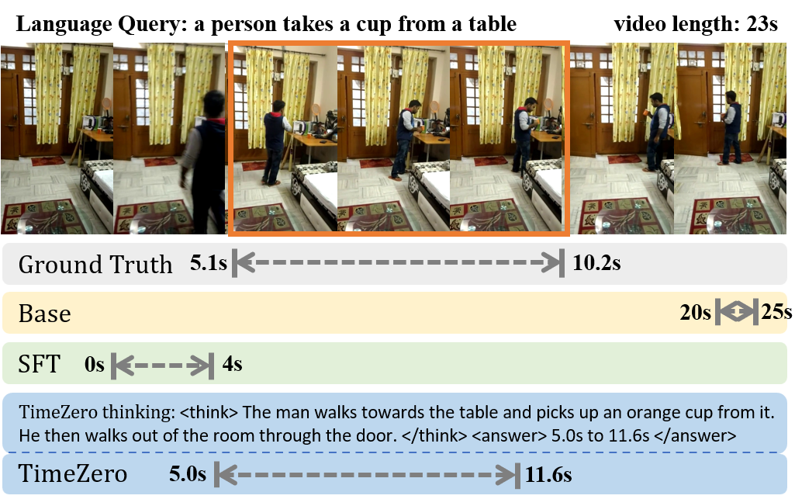
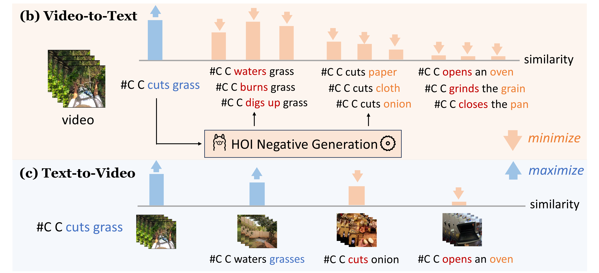
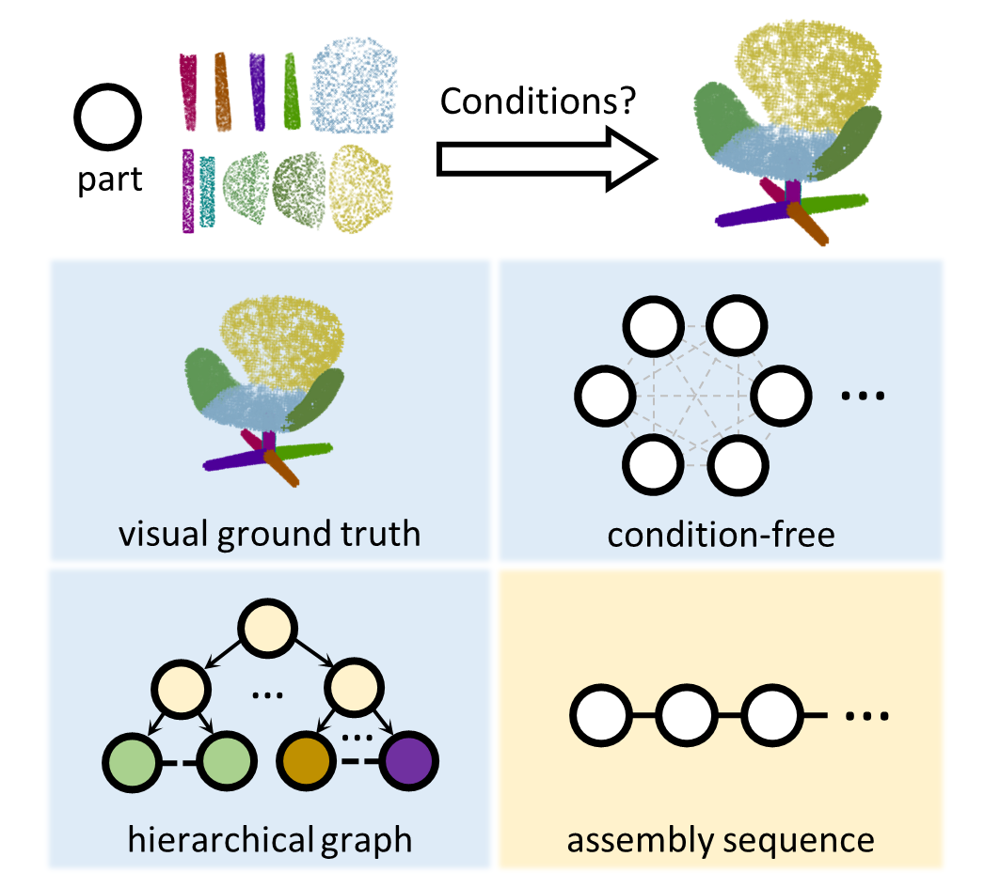
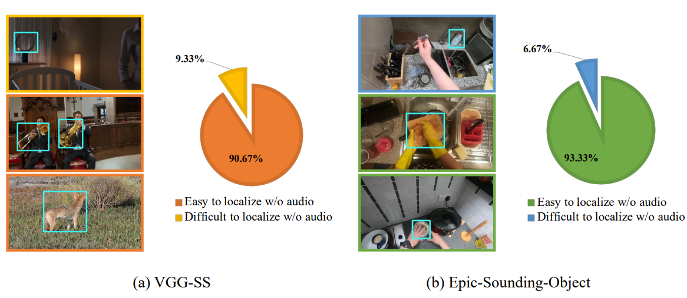
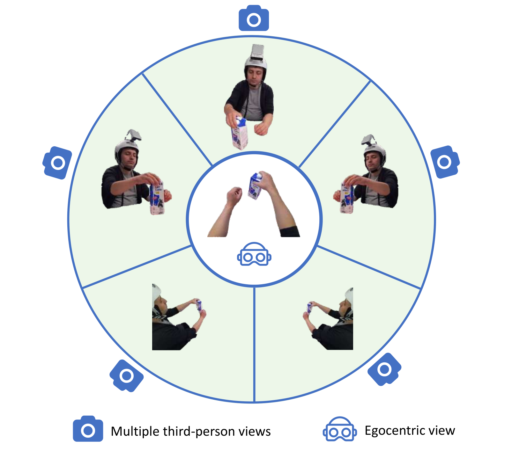
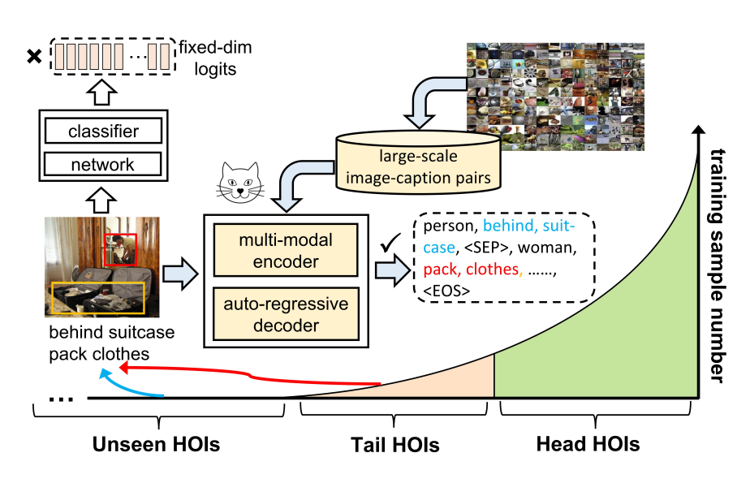

Publications
*: equal contributions. †: corresponding author. ‡: project lead.
|
|

|
TimeViper: A Hybrid Mamba-Transformer Vision-Language Model for Efficient Long Video Understanding
Boshen Xu*‡, Zihan Xiao*, Jiaze Li,
Jianzhong Ju,
Zhenbo Luo, Jian Luan, Qin Jin†
arxiv, 2025
project page /
code /
arxiv
We introduce TimeViper a hybrid vision-language model for long video understanding. This work represents an initial step towards developing, interpreting, and compressing hybrid Mamba-Transformer architectures.
|
|

|
Time-R1: Post-Training Large Vision Language Model for Temporal Video Grounding
Ye Wang*, Ziheng Wang*, Boshen Xu*‡, Yang Du, Kejun Lin, Zihan Xiao,
Zihao Yue, Jianzhong Ju, Liang Zhang, Dingyi Yang, Xiangnan Fang, Zewen He,
Zhenbo Luo, Wenxuan Wang, Junqi Lin, Jian Luan, Qin Jin†
NeurIPS, 2025
project page /
code /
arxiv
We introduce Time-R1 framework, TimeRFT training, and TVGBench for LVLM evaluation, to advance the field of using LVLM for temporal video grounding.
Time-R1 achieves state-of-the-art performance on TVG using only 2.5K data for RL fine-tuning, with improved performance on 4 VQA benchmarks.
|
|

|
EgoDTM: Towards 3D-Aware Egocentric Video-Language Pretraining
Boshen Xu, Yuting Mei, Xinbi Liu, Sipeng Zheng, Qin Jin†
NeurIPS, 2025
code /
arxiv
We introduce EgoDTM, an Egocentric Depth- and Text-aware Model that bridges the gap between 2D visual understanding and 3D spatial awareness.
|
|

|
TimeZero: Temporal Video Grounding with Reasoning-Guided LVLM
Ye Wang*, Boshen Xu*, Zihao Yue, Zihan Xiao , Ziheng Wang,
Liang Zhang , Dingyi Yang, Wenxuan Wang, Qin Jin†
CVPRW, 2025
code /
paper
We propose TimeZero, a reasoning-guided LVLM for temporal video grounding that extends inference through reinforcement learning to reason about video-language relationships. Achieves state-of-the-art performance on Charades-STA benchmark.
|
|

|
Do Egocentric Video-Language Models Truly Understand Hand-Object Interactions?
Boshen Xu, Ziheng Wang*, Yang Du* , Zhinan Song, Sipeng Zheng, Qin Jin†
ICLR, 2025
code
/
paper
/
slides
We propose EgoNCE++, an asymmetric contrastive learning pretraining objective to solve the EgoVLMs' weakness in distinguishing HOI combinations with word variations.
|
|

|
SPAFormer: Sequential 3D Part Assembly with Transformers
Boshen Xu, Sipeng Zheng, Qin Jin†
3DV, 2025
project page
/
code
/
arxiv
We present SPAFormer, a transformer-based framework that leverages assembly sequences constraints with three part encodings to address the combinatorial explosion challenge in 3D-PA task.
|
|

|
Unveiling Visual Biases in Audio-Visual Localization Benchmarks
Liangyu Chen, Zihao Yue, Boshen Xu, Qin Jin†
ECCV AVGenL Workshop, 2024
arxiv
We reveal that current audio-visual source localization benchmarks (VGG-SS, Epic-Sounding-Object) are easily hacked by vision-only models, therefore calling for a benchmark that requires more audio cues.
|
|

|
Prompt-Oriented View-Agnostic Learning for Egocentric Hand-Object Interaction in the Multi-View World
Boshen Xu, Sipeng Zheng, Qin Jin†
ACM MM, 2023
project page
/
code
/
arxiv
We propose POV, a view adaptation framework that enables transfer learning from multi-view third-person videos to egocentric videos.
|
|

|
Open-Category Human-Object Interaction Pre-Training via Language Modeling Framework
Sipeng Zheng, Boshen Xu, Qin Jin†
CVPR, 2023
We introduce
OpenCat, a language modeling framework that reformulates HOI prediction as sequence generation.
|
Awards
- 2023, Outstanding Graduate, Sichuan, China
- 2021, Tencent Special Scholarship, UESTC & Tencent
- 2021, Second Prize of China Undergraduate Mathematical Contest in Modeling, China
- 2020, National Scholarship, UESTC, China
Services
- Conference Reviewer for CVPR, NeurIPS, ICLR, ACM MM, ACL, ACCV.
- Journal Reviewer for TOMM.
- Teaching Assistant for Multimedia Application Technology (RUC 2024 Fall).
|
|